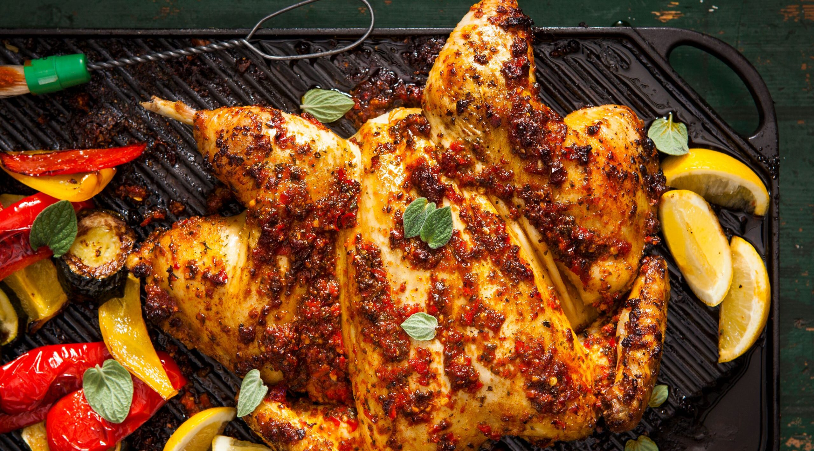

PIRI PIRI
CHICKEN
Spicy and Flavoursome
Home

i n g r e d i e n t s
- 2 Red Peppers
- 2 Red Onions
- 2 Red Serrano
Chillies
- 10 Birds Eye
Chillies
- 1 Lemon
(Juice & Zest)
- 1/2 a Cup of Oil
- 4 Tbsp of Vinegar
- 4 Cloves of Garlic
- 1 Tsp of Paprika
- 1 Tsp of Smoked
Paprika
- 2 Tsp of Cayenne
Pepper
- 1 1/2 Tsp of Salt
- 1/4 Tsp of White Pepper
- 1/4 Tsp of Dried
Rosemary
- 1 Medium Chicken
- 1/2 Tsp of Black Pepper
m e t h o d
- Preheat the oven to 180C/ 350F/
Gas 4.
- Place the peppers and red onion on a
baking tray and
drizzle half of the oil over
them.
- Now, sprinkle on the paprika, smoked paprika,
cayenne
pepper, and salt then toss and place in
the oven for 20 minutes.
- After the 20 minutes, add the garlic and
serrano
chillies and toss once more.
- Place in the oven again for a further 10
minutes.
- Remove from the oven and transfer into a
blender,
making sure to use all the liquid from
the tray.
- Add the dried chillies, white pepper, lemon zest,
lemon juice, and the dried rosemary.
- Blend until smooth, then add the remaining oil
and
vinegar and continue blending.
- Place the chicken breast-side down on a
sturdy chopping board, with the legs facing you.
- Prepare the chicken well by
spatch-cocking
it.
- Put the spatch-cocked chicken on a baking tray
and
pour over a third of the marinade.
- Place in the oven for 45 minutes.
- After 45 minutes, baste the chicken and spoon
over
some more sauce where needed.
- Put the chicken back in the oven for a further
10-15
minutes, until it's tender.
- Remove from the oven and allow to rest for 10
minutes.
- Serve with the remaining piri piri sauce.
- Enjoy!
Here is the recipe that inspired this:
Home